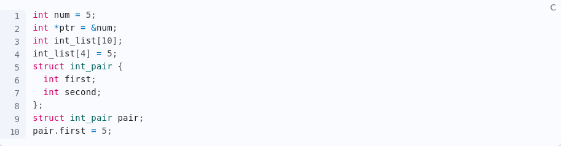

Some things might not be visible when there is a night light enabled.
1
Which of the following is used to read a single character from a file?
Answer Reveal
2
Which of the following performance metrics measures the additional resource cost of implementing an abstraction?
Answer Reveal
3
Which of the following C data types is typically used to represent a Boolean value?
Answer Reveal
4
A computer that stays online without crashing, but does not operate the way it was designed is best described as...
Answer Reveal
5

Given the following code, which of the following expression does not evaluate to 5?
Answer Reveal
6
Which of the following does not appear in a C header file?
Answer Reveal
7
Which of the following commands is used to display the current working directory?
Answer Reveal
8
Which of the following is not a declaration of a pointer variable?
Answer Reveal
9
Which of the following is a correct C function prototype?
Answer Reveal
10
Which of the following best describes a batch operating system?
Answer Reveal
11
Which of the following best describes a time-sharing operating system?
Answer Reveal
12
Which of the following roles is an operating system playing when it determines which application should run next on a processor?
Answer Reveal
13
What is multitasking?
Answer Reveal
14
Fault isolation can impact which of the following design goals?
Answer Reveal
15
What does the ls command do?
Answer Reveal
16
Which of the following roles is an operating system playing when it provides libraries for a graphical interface so that applications can have the same look and feel?
Answer Reveal
17
What does the mv command do?
Answer Reveal
18
Which of the following commands is used to create a directory?
Answer Reveal
19
Which of the following performance metrics measures the amount of useful work done in a given amount of time?
Answer Reveal
20
Which of the following roles is an operating system playing when it gives each application its own set of unlimited contiguous memory addresses?